Harga perangkat, internet, transportasi, produk, dan cetak mengikuti asumsi di Excel. Tenaga kerja adalah nilai setara (nonkas).
Klik kode risiko pada peta untuk melihat detail.

Tahap 2 - Project Planning | Kelompok 12 | Informatika, Universitas Samudra | tanggal adalah asumsi kelompok
Harga perangkat, internet, transportasi, produk, dan cetak mengikuti asumsi di Excel. Tenaga kerja adalah nilai setara (nonkas).